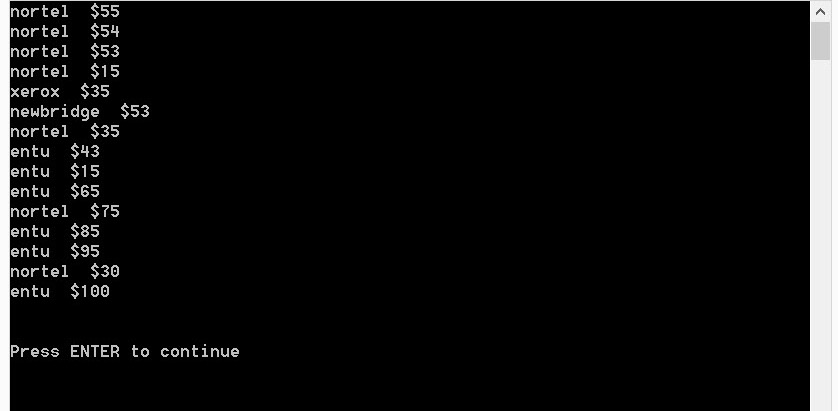
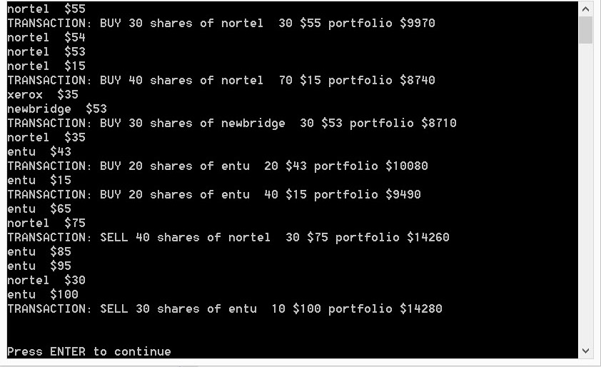

The purpose of this tutorial is to give you practice assembling code whose operation is based on one of the Gamma et al. Observer Pattern which is described in the Design Patterns section of the course notes. We are going to simulate a stock portfolio with transaction objects that "fire" automatically when stocks hit an attractive price. They will "fire" automatically because they are observers of the stocks consistent with that role in the Observer Pattern.
This tutorial is meant to be started as homework. You will not be able to finish if you only start working on it at your tutorial session.
By the way the templated arraylist code provided with this tutorial is based on the Gamma et al Iterator Pattern and shows you how to write your own pointer dereference operators in c++.
To do this exercise you will have to study the demo code carefully as well as the code that implements the Gamma et al Observer Pattern. There is not much code to write but you will have to study where it is needed.
Open and compile the demo code. It will require the std=c++11 option as follows:
g++ -g -Wall -std=c++11 main.cpp
The demo code creates some stocks, places them in a portfolio and then creates some buy and sell action objects that are supposed to execute when the stocks hit their "action price". Run the code. It will read changes in stock prices from the stockdata.txt simulation file. As this is being read the buy and sell actions are supposed to exectute, but of course don't, because that has not been implemented yet.
The demo code also writes the opening and closing balance of the portfolio and the transactions that took place to a simulationResults.txt file that should appear in the project's home directory. Here is the console output and the contents of the simulationResults.txt file as produced by the demo code.

Here is the contents of the simulationResults.txt data file after the demo code is run:
Portfolio#100 acct#1000 $10000 entu 0 $43 nortel 0 $44 newbridge 0 $47 xerox 0 $49 portfolio value $10000 nortel $55 nortel $54 nortel $53 nortel $15 xerox $35 newbridge $53 nortel $35 entu $43 entu $15 entu $65 nortel $75 entu $85 entu $95 nortel $30 entu $100 Portfolio#100 acct#1000 $10000 entu 0 $100 nortel 0 $30 newbridge 0 $53 xerox 0 $35 portfolio value $10000
As you can see in the demo code the buy and sell transactions did not execute. We want to set them up as observers of stocks that would execute when the stock price becomes compatible with their action price. So we want to set up a subject-observer relationship between stock objects and action objects. Study the code provided to see how it works and then build that behaviour based on the observer pattern. A Subject and Observer superclass is provided for you which should not need to be modified. Here is summary of what you will have to do to get this to work. This tutorial requires that you carefully study the code provided to see how it works then make the changes you want to.
Here is a summary of the things you will need to do.
1) The Stock class needs to be a subject in the subject-observer pattern. That is, it will have to inherit from the Subject class
2) The Action class and its subclasses (BuyAction and SellAction) need to be observers. That is, inherit from the Observer class.
3) The action objects will have to attach() to their subject and later dettach() once they have been executed. The action objects should attach to their subject when they are first created (i.e. in their constructors).
4) Whenever a stock's price changes it will have to call it's superclass Subject's notify() method so that all the observers will have a chance to react to the change in the stock's price.
5) The action objects must implement the required update() method that is specified in the Observer class. This is the method where they will have a chance to react to the change in their subject's stock price.
Note the following classes (files) are complete and should not require any changes: Subject, Observer, ArrayList, Portfolio, main.cpp. Code changes should only be required in the stock.h and action.h files.
After completing the exercise the console output and simulationResults.txt should look like this:

Simulation results file contents:
Portfolio#100 acct#1000 $10000 entu 0 $43 nortel 0 $44 newbridge 0 $47 xerox 0 $49 portfolio value $10000 nortel $55 TRANSACTION: BUY 30 shares of nortel 30 $55 portfolio $9970 nortel $54 nortel $53 nortel $15 TRANSACTION: BUY 40 shares of nortel 70 $15 portfolio $8740 xerox $35 newbridge $53 TRANSACTION: BUY 30 shares of newbridge 30 $53 portfolio $8710 nortel $35 entu $43 TRANSACTION: BUY 20 shares of entu 20 $43 portfolio $10080 entu $15 TRANSACTION: BUY 20 shares of entu 40 $15 portfolio $9490 entu $65 nortel $75 TRANSACTION: SELL 40 shares of nortel 30 $75 portfolio $14260 entu $85 entu $95 nortel $30 entu $100 TRANSACTION: SELL 30 shares of entu 10 $100 portfolio $14280 Portfolio#100 acct#1000 $10790 entu 10 $100 nortel 30 $30 newbridge 30 $53 xerox 0 $35 portfolio value $14280
When you have completed the exercise demonstrate your code to one of the tutorial TA's to get credit for the tutorial.
Refactor this code into approriate .h and .cpp files and then write a makefile to control the compilation. (If you do this send me a copy so I can post it for others.)